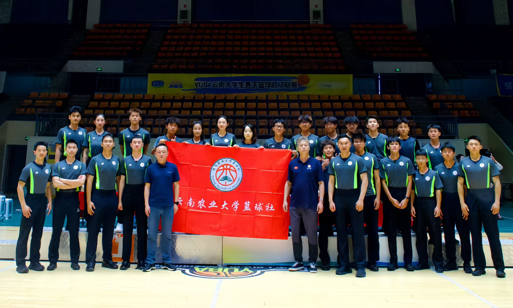
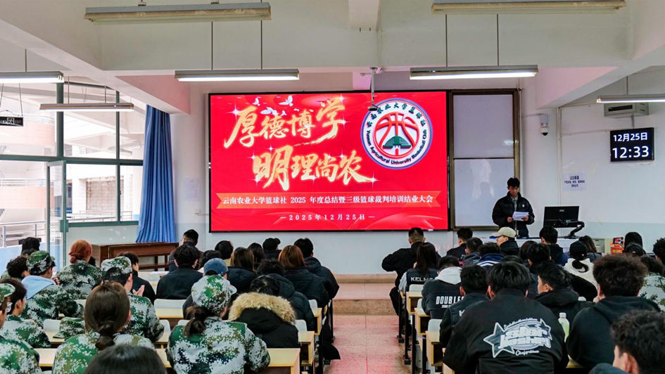
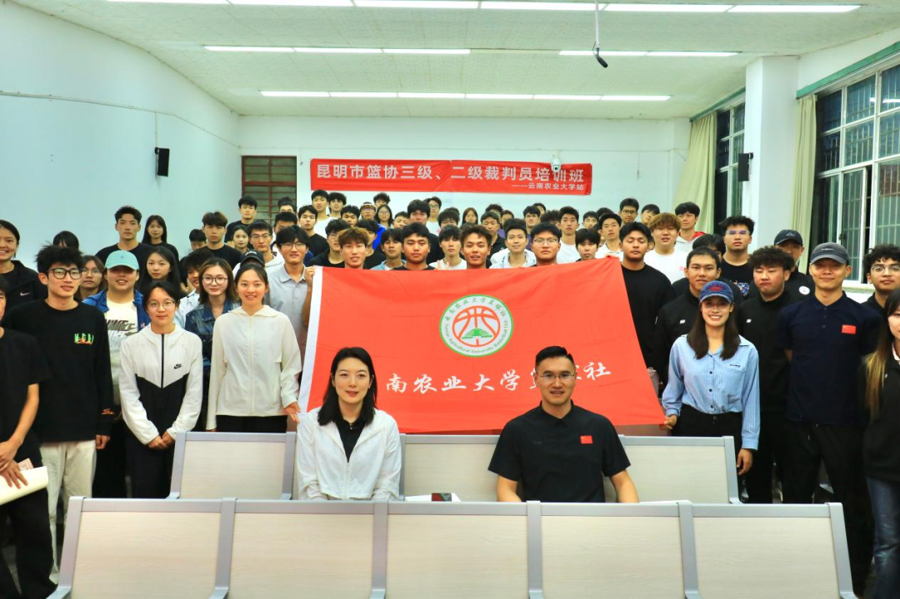
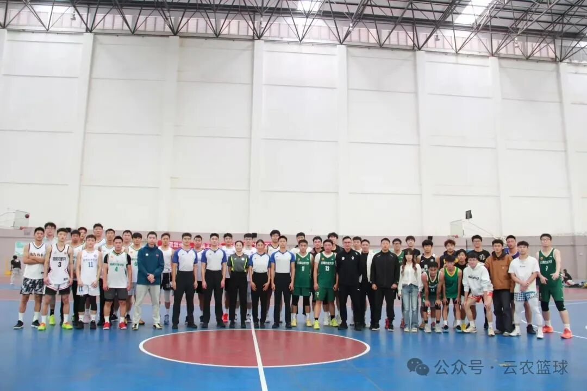

竞训部
负责社团日常篮球训练、球队建设、赛事战术指导与成员技能提升工作。
训练提升
YNAU BASKETBALL
SERVICE · REFEREE · COMPETITION
服务校园篮球赛事，
培育专业学生裁判。
我们是谁
本社团成立于2021年，以"服务校园篮球赛事、培育专业学生裁判、营造公平竞技氛围"为宗旨，依托云南农业大学体育学院资源，面向全校篮球爱好者开放。
社团以"赛事服务 + 裁判培养"为核心定位，长期开展篮球规则教学、手势实操、临场执裁实训与等级裁判备考指导，为校内各类篮球赛事输送了稳定的执裁力量。
目前已形成"理论学习 — 模拟演练 — 实战执裁"的闭环培养模式，助力成员掌握专业技能、考取裁判证书。未来，社团将持续完善培养体系，拓展执裁实践，打造校园篮球赛事服务的中坚力量，推动校园篮球运动规范有序发展。
组织架构
负责社团日常篮球训练、球队建设、赛事战术指导与成员技能提升工作。
训练提升负责社团活动宣传、海报制作、推文发布及校园篮球文化氛围营造。
宣传外联主导裁判员培训、等级备考指导，承接校内篮球赛事执裁与规则解读工作。
执裁核心负责社团物资采购、场地协调、赛事后勤保障及活动物资管理工作。
后勤保障活动剪影
从裁判员合影到省运会执裁现场，从培训课堂到校际交流。
每一帧都是篮球社的生动注脚。
品牌项目

01云南农业大学篮球社2025年度总结暨三级篮球裁判培训结业大会隆重召开。体育学院篮球教研室主任朱艳老师、闻忠波老师、社团指导教师范继畅老师，以及篮球社团全体成员、2025年三级篮球裁判培训学员齐聚一堂，共同回顾年度丰硕成果、见证成长蜕变历程、共绘未来发展蓝图。
年度总结 · 裁判结业 · 共绘蓝图
02本学期篮球二、三级裁判员专项培训的考核结果正式揭晓，共有65人获评二级裁判员证、17人获评三级裁判员证，现场随即举行了庄重的证书颁发仪式。与此同时，社团换届工作严格按照章程有序推进，经全员表决通过，邓礼伦同学正式当选2026-2027学年篮球社社长，为社团管理注入了新活力。
熊其堃、陈杰、陈思嘉、王鑫四位优秀社员代表依次登台，分享了参与省运会执裁等宝贵的实战经历，内容干货满满。大会还对学期内表现优异的执裁人员进行了表彰，树立了身边的榜样。随后，指导老师范继畅作全面总结，既肯定了社团在赛事组织与技能提升上的成绩，也针对现存不足提出了具体的改进方向，鼓励大家持续精进业务。
证书颁发 · 社团换届 · 表彰优秀2025云南农业大学第九届体育文化节"农大杯"篮球社由云南农业大学篮球社牵头举办，全校各个学院派出代表参与此次赛事，篮球社参与竞赛服务的社团成员超过100人。
赛事牵头 · 全校参与 · 百人服务
04云南农业大学篮球社与阳光组（非体育专业组）男子篮球队在范继畅老师的带领下前往昆明文理学院开展男篮友谊赛及裁判员交流活动，在友谊赛中，云南农业大学阳光组男子篮球队与昆明文理学院体育专业组男子篮球队进行了激烈的较量，双方运动员在比赛场上充分展示了各自的篮球技艺，展现了卓越的竞技风貌。此次交流不仅切磋了球技，还加深了两所院校男子篮球队之间的友谊，为提高篮球竞技水平提供了宝贵的实践交流机会。
男篮友谊赛 · 裁判交流 · 校际互动在云南农业大学"农大杯"篮球比赛颁奖仪式上，篮球社裁判团队圆满完成了赛事全程执裁工作。团队成员以专业、规范的判罚保障了赛事公平有序开展，充分展现了社团"以服务校园篮球、培育专业裁判"的建设成果与成员的执裁素养。
颁奖仪式 · 退役致敬 · 执裁收官社团荣誉
社团组队参赛，凭借扎实的训练功底与默契的团队配合，一路过关斩将，最终斩获社团杯篮球赛冠军，彰显了社团成员的竞技实力与拼搏精神。